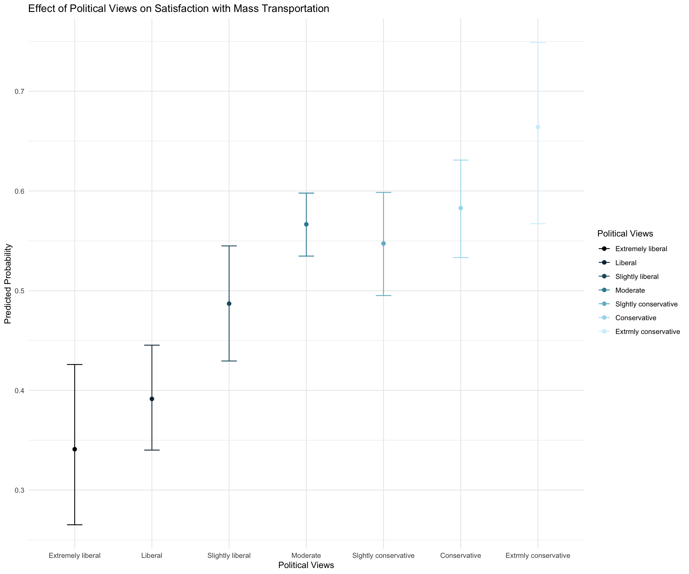

Code
library(dplyr)
library(ggplot2)
library(readr)
library(modelsummary)
library(tidyr)
library(knitr)
library(easystats)
library(broom)
library(emmeans)
library(marginaleffects)
library(performance)
library(arm)
library(modelsummary)Assignment requirements:
If you are using Github (recommended), make sure to commit and push your work to GitHub regularly, at least after each exercise. Write short and informative commit messages, and share the link to your assignment with me. If not, you can also send me the rmd & rendered file via Canvas.
In this assignment, you will not need to code from scratch. Rather, you’ll need to fill in code where needed. This assignment has a logisitic regression implementation for a scenario from EDA down to model comparison (and would be useful for whenever you may encounter such a situation in the future).
I want the assignments to begin reflecting a bit more of how you’d be doing things on your own, where you have some prior knowledge and you figure other things out (by referring to documentation, etc.) . In addition to the rmd, I also want you to submit to me notes of anything new that you learn while finishing the assignment. And any pain-points, and we’ll discuss more.
Note:
If you are fitting a model, display the model output in a neatly formatted table. (The gt tidy and kable functions can help!). Modelsummary also looks good(https://vincentarelbundock.github.io/modelsummary/articles/modelsummary.html)
Make sure that your plots are clearly labeled – for all axes, titles, etc.
Let’s begin by making a binary variable for respondents’ views on spending on mass transportation. Create a new variable that is equal to “1” if a respondent said spending on mass transportation is about right and “0” otherwise. Then plot the proportion of the response variable, using informative labels for each category.
library(dplyr)
library(ggplot2)
library(readr)
library(modelsummary)
library(tidyr)
library(knitr)
library(easystats)
library(broom)
library(emmeans)
library(marginaleffects)
library(performance)
library(arm)
library(modelsummary)# load data
data <- read.csv("gss2016.csv")Fill in the “____” below to encode the binary variable
data <- data %>%
mutate(mass_trans_spend_right = ifelse(natmass == "About right", 1, 0))#Get proportions
mass_spend_summary <- data %>%
count(mass_trans_spend_right) %>%
mutate(proportion = n / sum(n))
#Look at the dataframe structure. And make sure it's in a format that you can use for plotting.
#Change structure if neederd
mass_spend_long <- mass_spend_summary %>%
mutate(spend_category = ifelse(mass_trans_spend_right == 1, "About right", "Not right"))
#Factorise for plot
mass_spend_long$mass_trans_spend_right <- as.factor(mass_spend_long$mass_trans_spend_right)
#Make plot
#Hint: geom_bar lets you make stacked bar charts
ggplot(mass_spend_summary, aes(x = factor(mass_trans_spend_right), y = proportion, fill = factor(mass_trans_spend_right))) +
geom_bar(stat = "identity") +
scale_fill_manual(values = c("#E69F00", "#56B4E9"),
labels = c("Not right", "About right")) +
labs(title = "Proportion of Responses on Mass Transportation Spending",
x = "Response",
y = "Proportion",
fill = "Spending View") +
scale_x_discrete(labels = c("Not right", "About right")) +
theme_minimal()Recode
polviewsso it is a factor with levels that are in an order that is consistent with question on the survey. Note how the categories are spelled in the data.
data <- data %>%
mutate(polviews = factor(polviews,
levels = c("Extremely liberal", "Liberal", "Slightly liberal",
"Moderate", "Slghtly conservative", "Conservative",
"Extrmly conservative"),
ordered = TRUE))Make a plot of the distribution of
polviews
#Get proportions, format, and produce a plot like you did previously for mass_trans_spend_right
palette <- c(
"#772e25", "#c44536", "#ee9b00", "#197278", "#283d3b",
"#9CC5A1", "#6195C6", "#ADA7C9", "#4D4861", "grey50",
"#d4a373", "#8a5a44", "#4a6a74", "#5c80a8", "#a9c5a0",
"#7b9b8e", "#e1b16a", "#a69b7c", "#9d94c4", "#665c54"
)
palette_condition = c("#ee9b00", "#c44536","#005f73", "#283d3b", "#9CC5A1", "#6195C6", "#ADA7C9", "#4D4861")
plot_aes = theme_minimal() +
theme(legend.position = "top",
legend.text = element_text(size = 12),
text = element_text(size = 16, family = "Futura Medium"),
axis.text = element_text(color = "black"),
axis.ticks.y = element_blank())
polviews_summary <- data %>% #proportion
count(polviews) %>%
mutate(proportion = n / sum(n))
ggplot(polviews_summary, aes(x = polviews, y = proportion, fill = polviews)) +
geom_bar(stat = "identity") +
scale_fill_manual(values = palette) +
labs(title = "Distribution of Political Views",
x = "Political Views",
y = "Proportion") +
theme_minimal() +
theme(axis.text.x = element_text(angle = 45, hjust = 1),
plot.title = element_text(hjust = 0.5)) plot_aesList of 136
$ line :List of 6
..$ colour : chr "black"
..$ linewidth : num 0.5
..$ linetype : num 1
..$ lineend : chr "butt"
..$ arrow : logi FALSE
..$ inherit.blank: logi TRUE
..- attr(*, "class")= chr [1:2] "element_line" "element"
$ rect :List of 5
..$ fill : chr "white"
..$ colour : chr "black"
..$ linewidth : num 0.5
..$ linetype : num 1
..$ inherit.blank: logi TRUE
..- attr(*, "class")= chr [1:2] "element_rect" "element"
$ text :List of 11
..$ family : chr "Futura Medium"
..$ face : chr "plain"
..$ colour : chr "black"
..$ size : num 16
..$ hjust : num 0.5
..$ vjust : num 0.5
..$ angle : num 0
..$ lineheight : num 0.9
..$ margin : 'margin' num [1:4] 0points 0points 0points 0points
.. ..- attr(*, "unit")= int 8
..$ debug : logi FALSE
..$ inherit.blank: logi FALSE
..- attr(*, "class")= chr [1:2] "element_text" "element"
$ title : NULL
$ aspect.ratio : NULL
$ axis.title : NULL
$ axis.title.x :List of 11
..$ family : NULL
..$ face : NULL
..$ colour : NULL
..$ size : NULL
..$ hjust : NULL
..$ vjust : num 1
..$ angle : NULL
..$ lineheight : NULL
..$ margin : 'margin' num [1:4] 2.75points 0points 0points 0points
.. ..- attr(*, "unit")= int 8
..$ debug : NULL
..$ inherit.blank: logi TRUE
..- attr(*, "class")= chr [1:2] "element_text" "element"
$ axis.title.x.top :List of 11
..$ family : NULL
..$ face : NULL
..$ colour : NULL
..$ size : NULL
..$ hjust : NULL
..$ vjust : num 0
..$ angle : NULL
..$ lineheight : NULL
..$ margin : 'margin' num [1:4] 0points 0points 2.75points 0points
.. ..- attr(*, "unit")= int 8
..$ debug : NULL
..$ inherit.blank: logi TRUE
..- attr(*, "class")= chr [1:2] "element_text" "element"
$ axis.title.x.bottom : NULL
$ axis.title.y :List of 11
..$ family : NULL
..$ face : NULL
..$ colour : NULL
..$ size : NULL
..$ hjust : NULL
..$ vjust : num 1
..$ angle : num 90
..$ lineheight : NULL
..$ margin : 'margin' num [1:4] 0points 2.75points 0points 0points
.. ..- attr(*, "unit")= int 8
..$ debug : NULL
..$ inherit.blank: logi TRUE
..- attr(*, "class")= chr [1:2] "element_text" "element"
$ axis.title.y.left : NULL
$ axis.title.y.right :List of 11
..$ family : NULL
..$ face : NULL
..$ colour : NULL
..$ size : NULL
..$ hjust : NULL
..$ vjust : num 1
..$ angle : num -90
..$ lineheight : NULL
..$ margin : 'margin' num [1:4] 0points 0points 0points 2.75points
.. ..- attr(*, "unit")= int 8
..$ debug : NULL
..$ inherit.blank: logi TRUE
..- attr(*, "class")= chr [1:2] "element_text" "element"
$ axis.text :List of 11
..$ family : NULL
..$ face : NULL
..$ colour : chr "black"
..$ size : 'rel' num 0.8
..$ hjust : NULL
..$ vjust : NULL
..$ angle : NULL
..$ lineheight : NULL
..$ margin : NULL
..$ debug : NULL
..$ inherit.blank: logi FALSE
..- attr(*, "class")= chr [1:2] "element_text" "element"
$ axis.text.x :List of 11
..$ family : NULL
..$ face : NULL
..$ colour : NULL
..$ size : NULL
..$ hjust : NULL
..$ vjust : num 1
..$ angle : NULL
..$ lineheight : NULL
..$ margin : 'margin' num [1:4] 2.2points 0points 0points 0points
.. ..- attr(*, "unit")= int 8
..$ debug : NULL
..$ inherit.blank: logi TRUE
..- attr(*, "class")= chr [1:2] "element_text" "element"
$ axis.text.x.top :List of 11
..$ family : NULL
..$ face : NULL
..$ colour : NULL
..$ size : NULL
..$ hjust : NULL
..$ vjust : num 0
..$ angle : NULL
..$ lineheight : NULL
..$ margin : 'margin' num [1:4] 0points 0points 2.2points 0points
.. ..- attr(*, "unit")= int 8
..$ debug : NULL
..$ inherit.blank: logi TRUE
..- attr(*, "class")= chr [1:2] "element_text" "element"
$ axis.text.x.bottom : NULL
$ axis.text.y :List of 11
..$ family : NULL
..$ face : NULL
..$ colour : NULL
..$ size : NULL
..$ hjust : num 1
..$ vjust : NULL
..$ angle : NULL
..$ lineheight : NULL
..$ margin : 'margin' num [1:4] 0points 2.2points 0points 0points
.. ..- attr(*, "unit")= int 8
..$ debug : NULL
..$ inherit.blank: logi TRUE
..- attr(*, "class")= chr [1:2] "element_text" "element"
$ axis.text.y.left : NULL
$ axis.text.y.right :List of 11
..$ family : NULL
..$ face : NULL
..$ colour : NULL
..$ size : NULL
..$ hjust : num 0
..$ vjust : NULL
..$ angle : NULL
..$ lineheight : NULL
..$ margin : 'margin' num [1:4] 0points 0points 0points 2.2points
.. ..- attr(*, "unit")= int 8
..$ debug : NULL
..$ inherit.blank: logi TRUE
..- attr(*, "class")= chr [1:2] "element_text" "element"
$ axis.text.theta : NULL
$ axis.text.r :List of 11
..$ family : NULL
..$ face : NULL
..$ colour : NULL
..$ size : NULL
..$ hjust : num 0.5
..$ vjust : NULL
..$ angle : NULL
..$ lineheight : NULL
..$ margin : 'margin' num [1:4] 0points 2.2points 0points 2.2points
.. ..- attr(*, "unit")= int 8
..$ debug : NULL
..$ inherit.blank: logi TRUE
..- attr(*, "class")= chr [1:2] "element_text" "element"
$ axis.ticks : list()
..- attr(*, "class")= chr [1:2] "element_blank" "element"
$ axis.ticks.x : NULL
$ axis.ticks.x.top : NULL
$ axis.ticks.x.bottom : NULL
$ axis.ticks.y : list()
..- attr(*, "class")= chr [1:2] "element_blank" "element"
$ axis.ticks.y.left : NULL
$ axis.ticks.y.right : NULL
$ axis.ticks.theta : NULL
$ axis.ticks.r : NULL
$ axis.minor.ticks.x.top : NULL
$ axis.minor.ticks.x.bottom : NULL
$ axis.minor.ticks.y.left : NULL
$ axis.minor.ticks.y.right : NULL
$ axis.minor.ticks.theta : NULL
$ axis.minor.ticks.r : NULL
$ axis.ticks.length : 'simpleUnit' num 2.75points
..- attr(*, "unit")= int 8
$ axis.ticks.length.x : NULL
$ axis.ticks.length.x.top : NULL
$ axis.ticks.length.x.bottom : NULL
$ axis.ticks.length.y : NULL
$ axis.ticks.length.y.left : NULL
$ axis.ticks.length.y.right : NULL
$ axis.ticks.length.theta : NULL
$ axis.ticks.length.r : NULL
$ axis.minor.ticks.length : 'rel' num 0.75
$ axis.minor.ticks.length.x : NULL
$ axis.minor.ticks.length.x.top : NULL
$ axis.minor.ticks.length.x.bottom: NULL
$ axis.minor.ticks.length.y : NULL
$ axis.minor.ticks.length.y.left : NULL
$ axis.minor.ticks.length.y.right : NULL
$ axis.minor.ticks.length.theta : NULL
$ axis.minor.ticks.length.r : NULL
$ axis.line : list()
..- attr(*, "class")= chr [1:2] "element_blank" "element"
$ axis.line.x : NULL
$ axis.line.x.top : NULL
$ axis.line.x.bottom : NULL
$ axis.line.y : NULL
$ axis.line.y.left : NULL
$ axis.line.y.right : NULL
$ axis.line.theta : NULL
$ axis.line.r : NULL
$ legend.background : list()
..- attr(*, "class")= chr [1:2] "element_blank" "element"
$ legend.margin : 'margin' num [1:4] 5.5points 5.5points 5.5points 5.5points
..- attr(*, "unit")= int 8
$ legend.spacing : 'simpleUnit' num 11points
..- attr(*, "unit")= int 8
$ legend.spacing.x : NULL
$ legend.spacing.y : NULL
$ legend.key : list()
..- attr(*, "class")= chr [1:2] "element_blank" "element"
$ legend.key.size : 'simpleUnit' num 1.2lines
..- attr(*, "unit")= int 3
$ legend.key.height : NULL
$ legend.key.width : NULL
$ legend.key.spacing : 'simpleUnit' num 5.5points
..- attr(*, "unit")= int 8
$ legend.key.spacing.x : NULL
$ legend.key.spacing.y : NULL
$ legend.frame : NULL
$ legend.ticks : NULL
$ legend.ticks.length : 'rel' num 0.2
$ legend.axis.line : NULL
$ legend.text :List of 11
..$ family : NULL
..$ face : NULL
..$ colour : NULL
..$ size : num 12
..$ hjust : NULL
..$ vjust : NULL
..$ angle : NULL
..$ lineheight : NULL
..$ margin : NULL
..$ debug : NULL
..$ inherit.blank: logi FALSE
..- attr(*, "class")= chr [1:2] "element_text" "element"
$ legend.text.position : NULL
$ legend.title :List of 11
..$ family : NULL
..$ face : NULL
..$ colour : NULL
..$ size : NULL
..$ hjust : num 0
..$ vjust : NULL
..$ angle : NULL
..$ lineheight : NULL
..$ margin : NULL
..$ debug : NULL
..$ inherit.blank: logi TRUE
..- attr(*, "class")= chr [1:2] "element_text" "element"
$ legend.title.position : NULL
$ legend.position : chr "top"
$ legend.position.inside : NULL
$ legend.direction : NULL
$ legend.byrow : NULL
$ legend.justification : chr "center"
$ legend.justification.top : NULL
$ legend.justification.bottom : NULL
$ legend.justification.left : NULL
$ legend.justification.right : NULL
$ legend.justification.inside : NULL
$ legend.location : NULL
$ legend.box : NULL
$ legend.box.just : NULL
$ legend.box.margin : 'margin' num [1:4] 0cm 0cm 0cm 0cm
..- attr(*, "unit")= int 1
$ legend.box.background : list()
..- attr(*, "class")= chr [1:2] "element_blank" "element"
$ legend.box.spacing : 'simpleUnit' num 11points
..- attr(*, "unit")= int 8
[list output truncated]
- attr(*, "class")= chr [1:2] "theme" "gg"
- attr(*, "complete")= logi TRUE
- attr(*, "validate")= logi TRUEWhich political view occurs most frequently in this data set?
Make a plot displaying the relationship between satisfaction with mass transportation spending and political views. Use the plot to describe the relationship the two variables.
relationship_plot <- data %>%
group_by(polviews) %>%
summarize(prop_satisfied = mean(mass_trans_spend_right, na.rm = TRUE)) %>%
ggplot(aes(x = polviews, y = prop_satisfied, fill = polviews)) +
geom_bar(stat = "identity") +
scale_fill_manual(values = palette_condition) +
labs(title = "Satisfaction with Mass Transportation Spending by Political Views",
x = "Political Views",
y = "Proportion Satisfied") +
theme_minimal() +
theme(axis.text.x = element_text(angle = 45, hjust = 1))
relationship_plotThe more conservative one’s political views are the more they think the amount of spending on mass transportation is correct.
Recode age so that is a numeric variable. Note: Before making the variable numeric, you will need to replace the values “89 or older” with a single value.
data <- data %>%
mutate(age = ifelse(age == "89 or older", "89", age),
age = as.numeric(age))Plot the frequency distribution of age.
ggplot(data, aes(x = age)) +
geom_density(fill = palette[3], alpha = 0.7) +
labs(title = "Distribution of Age",
x = "Age",
y = "Density") +
theme_minimal()Let’s start by fitting a logistic regression model with just the intercept
intercept_only_model <- glm(
mass_trans_spend_right ~ 1,
family = binomial(link = "logit"),
data = data
)
summary(intercept_only_model)
Call:
glm(formula = mass_trans_spend_right ~ 1, family = binomial(link = "logit"),
data = data)
Coefficients:
Estimate Std. Error z value Pr(>|z|)
(Intercept) 0.11906 0.03937 3.024 0.00249 **
---
Signif. codes: 0 '***' 0.001 '**' 0.01 '*' 0.05 '.' 0.1 ' ' 1
(Dispersion parameter for binomial family taken to be 1)
Null deviance: 3581.3 on 2589 degrees of freedom
Residual deviance: 3581.3 on 2589 degrees of freedom
AIC: 3583.3
Number of Fisher Scoring iterations: 3Interpret the intercept in the context of the data. You can do this by converting the \(\beta_0\) parameter out of the log-odds metric to the probability metric. Make sure to include the 95% confidence intervals. Then interpret the results in a sentence or two–what is the basic thing this probability tells us about?
b0 <- coef(intercept_only_model)[1] # get coef
b0_transformed <- exp(b0) / (1 + exp(b0)) # logistic transform
print(b0_transformed)(Intercept)
0.5297297 ci_lower = b0 - 1.96 * 0.0393685
ci_upper = b0 + 1.96 * 0.0393685
#transforming confidence intervals of coefficients into probabilities
p_lower = exp(ci_lower) / (1 + exp(ci_lower))
p_upper = exp(ci_upper) / (1 + exp(ci_upper))
print(paste("95% CI: [", round(p_lower, 3), ",", round(p_upper, 3), "]"))[1] "95% CI: [ 0.51 , 0.549 ]"Interpretation: The intercept-only model predicts that approximately 53% of respondents (95% CI: [51%, 55%]) think mass transportation spending is “about right”. This represents the overall proportion of people satisfied with current mass transportation spending levels, without accounting for other factors such as demographic or political views.
Now let’s fit a model using the demographic factors -
age,sex,sei10- to predict the odds a person is satisfied with spending on mass transportation. Make any necessary adjustments to the variables so the intercept will have a meaningful interpretation. Neatly display the model coefficients (do not display the summary output)
#make sure that sex is a factor (i.e. to make sure R knows it's binary/categorical, and not continuous)
data$sex <- as.factor(data$sex)
#fit with glm()
m1 <- glm(
mass_trans_spend_right ~ sex + age + sei10,
family = binomial(link = "logit"),
data = data
)
m1 %>% #produce tidy output of model coefficients
tidy() %>%
kable() | term | estimate | std.error | statistic | p.value |
|---|---|---|---|---|
| (Intercept) | 0.8254509 | 0.1395587 | 5.914722 | 0.0000000 |
| sexMale | -0.2557439 | 0.0798020 | -3.204732 | 0.0013519 |
| age | -0.0061659 | 0.0022824 | -2.701502 | 0.0069027 |
| sei10 | -0.0062271 | 0.0016609 | -3.749229 | 0.0001774 |
Consider the relationship between sex and one’s opinion about spending on mass transportation. Interpret the coefficient of sex in terms of the logs odds and OR of being satisfied with spending on mass transportation. What are the predicted probabilities for males and females on support for spending on mass transportation? Please include the 95% CIs around each estimate.
m1 %>%
tidy() %>%
kable()| term | estimate | std.error | statistic | p.value |
|---|---|---|---|---|
| (Intercept) | 0.8254509 | 0.1395587 | 5.914722 | 0.0000000 |
| sexMale | -0.2557439 | 0.0798020 | -3.204732 | 0.0013519 |
| age | -0.0061659 | 0.0022824 | -2.701502 | 0.0069027 |
| sei10 | -0.0062271 | 0.0016609 | -3.749229 | 0.0001774 |
m1 %>%
tidy(exponentiate = TRUE) %>%
kable()| term | estimate | std.error | statistic | p.value |
|---|---|---|---|---|
| (Intercept) | 2.2829100 | 0.1395587 | 5.914722 | 0.0000000 |
| sexMale | 0.7743403 | 0.0798020 | -3.204732 | 0.0013519 |
| age | 0.9938530 | 0.0022824 | -2.701502 | 0.0069027 |
| sei10 | 0.9937922 | 0.0016609 | -3.749229 | 0.0001774 |
bsex <- coef(m1)["sexMale"]
ci_lower_lo = bsex - 1.96 * 0.0798020
ci_upper_lo = bsex + 1.96 * 0.0798020
ci_lower_or = 1.29 - 1.96 * 0.0798020
ci_upper_or = 1.29 + 1.96 * 0.0798020
list(
"CI for log-odds" = c(ci_lower_lo, ci_upper_lo),
"CI for Odds Ratio" = c(ci_lower_or, ci_upper_or)
)$`CI for log-odds`
sexMale sexMale
-0.41215578 -0.09933194
$`CI for Odds Ratio`
[1] 1.133588 1.446412emm_sex <- emmeans(m1, "sex", type = "response")If you did this right, you’ll find that being female (as compared to male) is associated with an increase in the log-odds of being satisfied with spending on mass transportation by 0.2557439 units (95% CI [0.09, 0.41]), holding all other variables constant. This equates to the odds of thinking the spending amount is right in females being 1.29 times the odds of thinking this in men (95% CI [1.13, 1.44]).
The predicted probability for females to be satisfied with spending on mass transportation is 55.9% (95% CI [53.3%, 58.5%]) and that of males is 49.5% (95% CI [46.7%, 52.4%]).
Verify this.
Next, consider the relationship between age and one’s opinion about spending on mass transportation. Interpret the coefficient of age in terms of the logs odds and OR of being satisfied with spending on mass transportation. Please include the 95% CIs around each estimate.
bage <- coef(m1)["age"]
se_age <- sqrt(vcov(m1)["age", "age"])
print(bage) age
-0.00616594 print(se_age)[1] 0.002282412ci_lower_lo = bage - 1.96 * se_age
ci_upper_lo = bage + 1.96 * se_age
or_age <- exp(bage)
ci_lower_or = exp(ci_lower_lo)
ci_upper_or = exp(ci_upper_lo)
print(or_age) age
0.993853 list(
"CI for log-odds" = c(ci_lower_lo, ci_upper_lo),
"CI for Odds Ratio" = c(ci_lower_or, ci_upper_or)
)$`CI for log-odds`
age age
-0.010639467 -0.001692412
$`CI for Odds Ratio`
age age
0.9894169 0.9983090 A one unit increase in age is associated with a decrease in the log-odds of being satisfied with spending on mass transportation by -0.0062, holding all other variables constant. The odds ratio is 0.994, which confirms the negative relationship implied by the log-odds coefficient. Specifically, for each additional unit of age, the odds of being satisfied with mass transportation spending decrease by a factor of about 0.994, or approximately 0.6% per unit increase in age, holding other factors constant.
Consider the relationship between SES and one’s opinion about spending on mass transportation. Interpret the coefficient of SES in terms of the logs odds and OR of being satisfied with spending on mass transportation. Please include the 95% CIs around each estimate. ß
bses <- coef(m1)
bses <- coef(m1)["sei10"]
bses <- coef(m1)["sei10"]
ses_se <- sqrt(vcov(m1)["sei10", "sei10"])
ci_lower_log_odds <- bses - 1.96 * ses_se
ci_upper_log_odds <- bses + 1.96 * ses_se
odds_ratio <- exp(bses)
ci_lower_odds_ratio <- exp(ci_lower_log_odds)
ci_upper_odds_ratio <- exp(ci_upper_log_odds)
results <- data.frame(
Metric = c("Log-odds coefficient",
"95% CI for log-odds",
"Odds Ratio",
"95% CI for Odds Ratio"),
Value = c(
format(round(bses, 4), nsmall = 4),
paste0("[", format(round(ci_lower_log_odds, 4), nsmall = 4), ", ",
format(round(ci_upper_log_odds, 4), nsmall = 4), "]"),
format(round(odds_ratio, 4), nsmall = 4),
paste0("[", format(round(ci_lower_odds_ratio, 4), nsmall = 4), ", ",
format(round(ci_upper_odds_ratio, 4), nsmall = 4), "]")
)
)
# Display using kable
kable(results)| Metric | Value |
|---|---|
| Log-odds coefficient | -0.0062 |
| 95% CI for log-odds | [-0.0095, -0.0030] |
| Odds Ratio | 0.9938 |
| 95% CI for Odds Ratio | [0.9906, 0.9970] |
A one unit increase in SES index is associated with a decrease in the log-odds of being satisfied with spending on mass transportation by 0.0062 units (95% CI [-0.0107, -0.0017]), holding all other variables constant. The odds ratio is less than 1 (0.9937922), which confirms the negative relationship implied by the log-odds coefficient. Specifically, for each additional unit of SES index, the odds of being satisfied with mass transportation spending decrease by a factor of about 0.993, or approximately 0.7% per unit increase in SES index, holding other factors constant (95% CI [0.989, 0.998]).
Calculate the marginal effects of sex, age, and SES on mass transportation spending. You can use the
marginspackage functionmarginsdiscussed in your textbook or you can use themarginaleffectspackageavg_slopeavg_comparisonsdiscussed in lecture. Interpret each estimate.
avg_comparisons(m1, comparison = "difference") %>%
kable()| term | contrast | estimate | std.error | statistic | p.value | s.value | conf.low | conf.high |
|---|---|---|---|---|---|---|---|---|
| age | +1 | -0.0015153 | 0.0005579 | -2.716128 | 0.0066050 | 7.242218 | -0.0026088 | -0.0004219 |
| sei10 | +1 | -0.0015304 | 0.0004039 | -3.789362 | 0.0001510 | 12.692832 | -0.0023219 | -0.0007388 |
| sex | Male - Female | -0.0630688 | 0.0196461 | -3.210251 | 0.0013262 | 9.558494 | -0.1015743 | -0.0245632 |
The marginal effect of age is -0.00152 (95% CI [0.00261, -0.00042]). So, for each additional unit increase of age, the probability of being satisfied with mass transportation spending decreases by approximately 0.15 percentage points, holding other factors constant (p = 0.007).
The marginal effect of SES is -0.00153 (95% CI [0.00232, -0.00074]). For each one-unit increase in the socioeconomic index, the probability of being satisfied with mass transportation spending decreases by approximately 0.15 percentage points, holding other variables constant.
The marginal effect for being female compared to male is 0.06 (95% CI [0.025, 0.102]). This indicates that females are, on average, about 6.31 percentage points more likely than males to be satisfied with mass transportation spending, holding other factors constant.
Conduct a drop-in-deviance/likelihood ratio test to determine if polviews is a significant predictor of attitude towards spending on mass transportation. Name these two models
fit2andfit3, respectively. Compare the two models.
fit2 <- glm(
mass_trans_spend_right ~ sex + age + sei10,
family = binomial(link = "logit"),
data = data
)
fit3 <- glm(
mass_trans_spend_right ~ sex + age + sei10 + polviews,
family = binomial(link = "logit"),
data = data
)
test_likelihoodratio(fit2, fit3) %>%
kable()| Name | Model | df | df_diff | Chi2 | p | |
|---|---|---|---|---|---|---|
| fit2 | fit2 | glm | 4 | NA | NA | NA |
| fit3 | fit3 | glm | 10 | 6 | 63.02844 | 0 |
Is the model with polviews better than the model without?
Let’s plot the results
We next use the model to produce visualizations:
Given the code below, interpet what is being plotted:
pol_plot : This plot shows the predicted probability of being satisfied with mass transportation spending across different political views. It shows that as political ideology becomes more conservative, the probability of being satisfied increases.
sex_plot : This plot shows the predicted probability of satisfaction with mass transportation spending for males and females. It highlights that females are more likely than males to consider the current spending level as “about right.”
ses_plot: This plot shows the effect of SES on the predicted probability of satisfaction with mass transportation spending. It suggests that as SES increases, satisfaction decreases. The shaded region represents the confidence interval around the prediction.
adjust the various settings in your plot to make it look professional.
You can use ggeffects to get the predicted probabilities for these models.
library(ggeffects)
colors <- c("Extremely liberal" = "black",
"Liberal" = "#0e2f44", # Dark blue
"Slightly liberal" = "#1d5a6c", # Less dark blue
"Moderate" = "#358ca3", # Medium blue
"Slghtly conservative" = "#71b9d1", # Light blue
"Conservative" = "#a6dcef", # Lighter blue
"Extrmly conservative" = "#d0f0fd") # Very light blue
pp_pol <- ggemmeans(fit3, terms = c("polviews"))
# Adjusted plot with gradient colors
pol_plot <- ggplot(pp_pol, aes(x = x, y = predicted, color = x)) +
geom_point(size = 2) +
geom_errorbar(aes(ymin = conf.low, ymax = conf.high), width = 0.2) +
scale_color_manual(values = colors) +
labs(title = "Effect of Political Views on Satisfaction with Mass Transportation",
x = "Political Views", y = "Predicted Probability",
color = "Political Views") +
theme_minimal()
pol_plot
pp_sex <- ggemmeans(fit3, terms = c("sex"))
sex_plot <- ggplot(pp_sex, aes(x = x, y = predicted, color = x)) +
geom_point(size = 2) +
geom_errorbar(aes(ymin = conf.low, ymax = conf.high), width = 0.2) +
labs(title = "Effect of Sex on Satisfaction with Mass Transportation",
x = "Sex", y = "Predicted Probability",
color = "Sex") +
theme_minimal()
pp_sex# Predicted probabilities of mass_trans_spend_right
sex | Predicted | 95% CI
-------------------------------
Female | 0.55 | 0.51, 0.58
Male | 0.48 | 0.44, 0.51
Adjusted for:
* age = 48.90
* sei10 = 46.07pp_ses <- ggemmeans(fit3, terms = "sei10")
ses_plot <- ggplot(pp_ses, aes(x = x, y = predicted)) +
geom_line(color = "#2c7fb8", size = 1) +
geom_ribbon(aes(ymin = conf.low, ymax = conf.high), fill = "#2c7fb8", alpha = 0.2) + # Add a confidence interval band
labs(title = "Effect of SES on Satisfaction with Mass Transportation",
x = "Socioeconomic Status", y = "Predicted Probability") +
theme_minimal() +
theme(legend.position = "none")
ses_plotbinned_residuals(fit2)Warning: About 86% of the residuals are inside the error bounds (~95% or higher would be good).Answer: The plots do not reveal any major systematic deviations from randomness. This suggests that the logistic regression model is a good choice for these data.
r2_mcfadden(fit2)# R2 for Generalized Linear Regression
R2: 0.010
adj. R2: 0.009R2 interpretation: The R^2 value suggests that while the predictors have a statistically significant effect, a substantial portion of the variability in satisfaction remains unexplained.
Next, Take a look at the binned residual plots for each continuous predictor variable and look at linearity. Is there a predictor that sticks out? What can we do to improve model fit in this case?
binned_residuals(fit2, term="sei10")Warning: About 88% of the residuals are inside the error bounds (~95% or higher would be good).binned_residuals(fit2, term="age")Ok: About 98% of the residuals are inside the error bounds.binned_residuals(fit2, term="sei10") %>% plot(show_dots=TRUE)binned_residuals(fit2, term="age") %>% plot(show_dots=TRUE)
The binned residual plot for sei10 curves slightly, suggesting that SES may not have a simple linear relationship with satisfaction. The plot for age looks more linear. To improve the model, we could try adding a squared term for SES.
emmeans(fit3, "polviews") %>% pairs() %>% as.data.frame() %>% filter(p.value < .05) contrast estimate SE df z.ratio
Extremely liberal - Moderate -0.9266262 0.1950664 Inf -4.750
Extremely liberal - Slghtly conservative -0.8487137 0.2127293 Inf -3.990
Extremely liberal - Conservative -0.9935486 0.2108369 Inf -4.712
Extremely liberal - Extrmly conservative -1.3402621 0.2792876 Inf -4.799
Liberal - Moderate -0.7090022 0.1308520 Inf -5.418
Liberal - Slghtly conservative -0.6310897 0.1555805 Inf -4.056
Liberal - Conservative -0.7759246 0.1532081 Inf -5.065
Liberal - Extrmly conservative -1.1226380 0.2392048 Inf -4.693
Slightly liberal - Extrmly conservative -0.7334002 0.2412625 Inf -3.040
p.value
<.0001
0.0013
0.0001
<.0001
<.0001
0.0010
<.0001
0.0001
0.0382
Results are averaged over the levels of: sex
Results are given on the log odds ratio (not the response) scale.
P value adjustment: tukey method for comparing a family of 7 estimates emmeans(fit3, "polviews", type="response") %>% pairs() %>% as.data.frame() %>% filter(p.value < .05) contrast odds.ratio SE df null
Extremely liberal / Moderate 0.3958871 0.07722426 Inf 1
Extremely liberal / Slghtly conservative 0.4279651 0.09104070 Inf 1
Extremely liberal / Conservative 0.3702605 0.07806458 Inf 1
Extremely liberal / Extrmly conservative 0.2617771 0.07311109 Inf 1
Liberal / Moderate 0.4921350 0.06439684 Inf 1
Liberal / Slghtly conservative 0.5320118 0.08277063 Inf 1
Liberal / Conservative 0.4602780 0.07051835 Inf 1
Liberal / Extrmly conservative 0.3254202 0.07784206 Inf 1
Slightly liberal / Extrmly conservative 0.4802732 0.11587191 Inf 1
z.ratio p.value
-4.750 <.0001
-3.990 0.0013
-4.712 0.0001
-4.799 <.0001
-5.418 <.0001
-4.056 0.0010
-5.065 <.0001
-4.693 0.0001
-3.040 0.0382
Results are averaged over the levels of: sex
P value adjustment: tukey method for comparing a family of 7 estimates
Tests are performed on the log odds ratio scale Conservatives are 2.7 times more likely to support mass transit spending compared to extremely liberal and liberal
Extreme liberals are 2.5 times more likely to support spending compared to conservatives, moderates and slight conservatives
Extrm conservatives are 3.1 times more likely to support mass spending than liberals and slight liberals
Liberals are 2.0 times more likely to support spending than moderates and slight conservatives.
Based on the model summary below, and the three figures, we can conclude that both demographic factors and political views significantly influence satisfaction with mass transportation spending. Specifically, women are more likely to support current spending than men, older individuals are less likely to support current spending, and individuals with higher SES are less likely to support current spending. Political views also play a significant role, with conservatives more likely to support current spending than liberal individuals.
The logistic regression model fits the data reasonably well, but the residual analysis suggests SES might have a non-linear relationship with satisfaction. The R^2 value indicates that while the model explains some variability, additional factors may be at play. Future research could explore more complex relationships between SES and satisfaction to improve model fit.
| Df | Deviance | Resid. Df | Resid. Dev | Pr(>Chi) | |
|---|---|---|---|---|---|
| NULL | NA | NA | 2589 | 3581.340 | NA |
| sex | 1 | 11.31903 | 2588 | 3570.021 | 0.0007672 |
| age | 1 | 10.10603 | 2587 | 3559.915 | 0.0014778 |
| sei10 | 1 | 14.11908 | 2586 | 3545.796 | 0.0001716 |
| polviews | 6 | 63.02844 | 2580 | 3482.768 | 0.0000000 |
Table 1